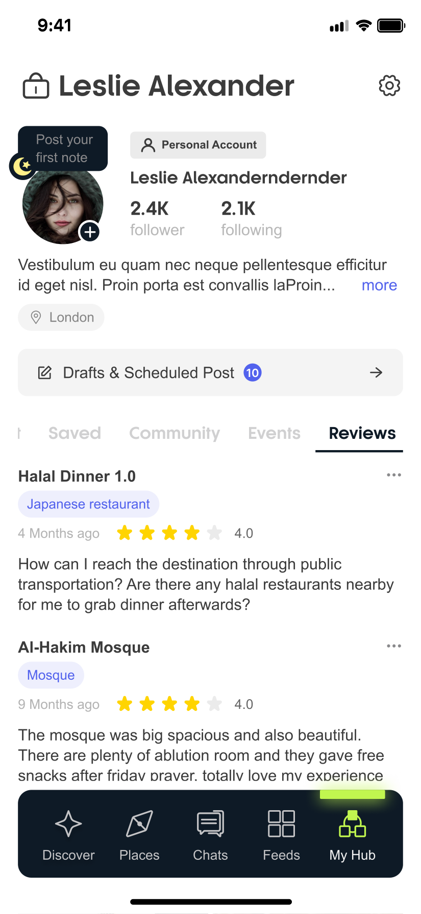
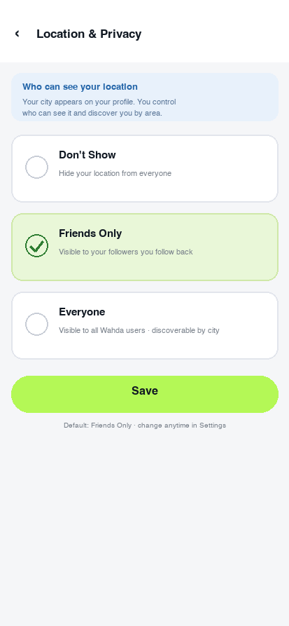

REQ-053 / 124: Today the profile location is an isolated "London" pill — no country, no privacy tier (either fully shown or fully hidden), and no action on tap. Redesign as full country + city display + privacy tier label + three-level visibility control; tapping the location opens same-city users and events discovery. Location privacy defaults to Friends Only, with the user in full control of visibility.
Left: profile today → Center: profile updated (native location pill expanded + privacy tier label) → Right: new Location & Privacy three-tier settings page (reusing Settings row styling).


| # | Update | Details |
|---|---|---|
| 1 | Country + city | The native "London" pill expands to "London, United Kingdom", completing the geographic dimension (REQ-053; sourced from the city data already on the profile, no new data fields). |
| 2 | Privacy tier label | A green Friends label on the right of the pill shows the current value of the three-tier setting, making the current visibility level visible right on the profile. |
| 3 | Tap to discover same city | Tapping the location pill › opens same-city discovery: users / events / places nearby (REQ-053); pairs with Places language and location recommendations (REQ-073). |
| 4 | Three-level visibility | Don't Show / Friends Only / Everyone, replacing "all or nothing"; the settings entry is added to the Settings "Who can see your content" group (same pattern as REQ-053 / 009). |
| 5 | Default tier | Defaults to Friends Only with first-time setup guidance; maps and same-city recommendations use approximate location only. |
| 6 | Save applies instantly | After Save, the profile label updates in sync (center image ② linked with the options in the right image). |